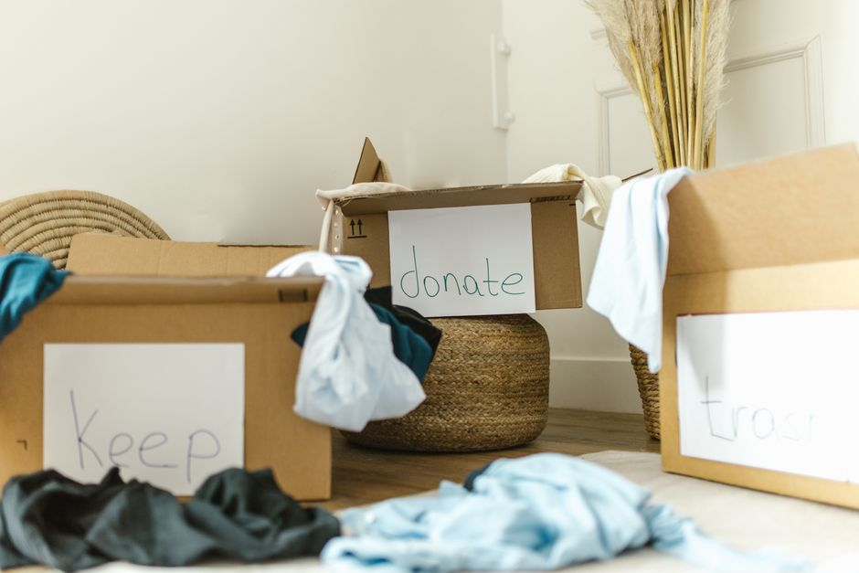
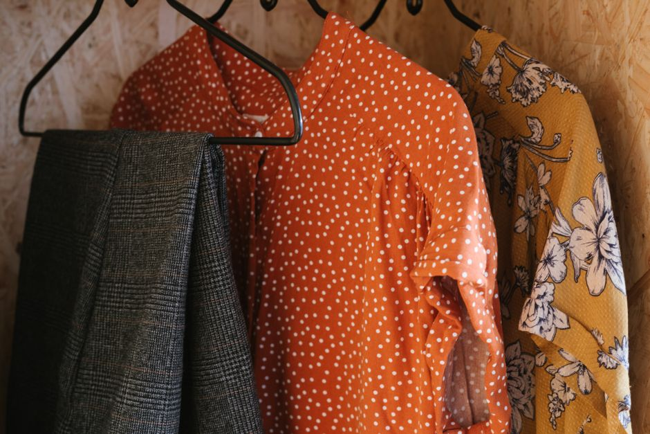

How to Organize Your Clothes Without Losing Space

Photo: RDNE Stock project / Pexels
The Challenge: Limited Closet Space
Imagine you have a tiny closet or a wardrobe that feels perpetually overstuffed. You’ve got clothes everywhere, but finding the perfect outfit is like searching for a needle in a haystack. Let’s dive into a practical guide to organize your wardrobe efficiently and effectively, ensuring you make the most of your limited space.
Step 1: Declutter Your Closet
Start by removing everything from your closet. This may sound daunting, but it’s a necessary first step. In this scenario, let’s assume you have 40 items of clothing. Go through each piece one by one:
- From Time to Time: Sort through your clothes every 6 months. Any item that hasn’t been worn in the last 6 months can be donated or given away.
- Concrete Example: If you have 40 pieces, set aside 8 items for donation. This will leave you with 32 essential pieces.
Step 2: Categorize Your Items

Photo: RF._.studio _ / Pexels
Organize your clothes by category. This makes it easier to find what you need quickly. For a practical example, let’s categorize the remaining 32 pieces as follows:
- Shirts and Blouses: 12 items
- Pants and Trousers: 8 items
- Dresses and Skirts: 4 items
- Outerwear: 4 items
- Underwear and Sleepwear: 4 items
Step 3: Use Vertical Space
Maximize the height of your closet by using vertical space. Install shelves or use over-the-door organizers. For instance, install two shelves in your closet to create a section for hanging items and another for folded items.
- Example: Use a 3-tier organizer. The top tier for outerwear, the middle tier for pants and shirts, and the bottom tier for folded items like sweaters and dresses.
Step 4: Fold and Fold Again
For items that don’t hang well, such as sweaters or jeans, fold them neatly. Folded clothes take up less space and are easier to store. Aim for a maximum of 4 layers per stack to maintain visibility.
- Concrete Example: Fold 10 pairs of jeans into 4-layer stacks. This will take up less space and allow you to see all your jeans at a glance.
Step 5: Hang Smartly
Hang clothes vertically to save space. Use slim hangers to minimize width. For dresses and skirts, you can use hangers with clips or clips directly onto a rod.
- Concrete Example: Hang 8 dresses using clips directly on the rod. This reduces the width of each hanger and frees up more space in your closet.
Step 6: Utilize Underutilized Spaces
Don’t overlook the space under your bed or behind your doors. Use under-bed storage containers or attach hooks to the back of your closet door.
- Example: Place a 24-inch under-bed storage container for shoes and accessories. This will keep your floor clear and maximize space.
Step 7: Label Everything
Label your shelves and containers to keep your closet organized. This is especially useful if you have multiple people using the space.
- Concrete Example: Label three shelves: “Shirts & Blouses,” “Pants & Trousers,” and “Outerwear.” This will ensure everyone knows where to put their clothes.
Step 8: Regular Maintenance
To keep your closet organized, dedicate a weekend day each quarter to reassess and tidy up.
- Frequency: Every 3 months, spend 2 hours reorganizing and decluttering your closet.
Conclusion
Organizing your clothes doesn’t have to be a daunting task, especially when you have limited space. By following these steps, you can create a functional and aesthetically pleasing closet that works efficiently for you. Remember, the goal is not just to fit more clothes but to create a system that makes finding and storing your wardrobe easier and more enjoyable.
Recommended products
As an Amazon Associate, I earn from qualifying purchases.